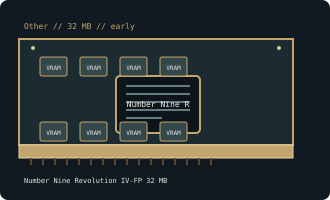

[ OTHER // INDIVIDUAL GPU RECORD ]
Number Nine Revolution IV-FP 32 MB
1999; S3 Savage4 Pro; 32 MB SDRAM, 64-bit board.

Recorded specifications
| Catalog identity | Number Nine Revolution IV-FP 32 MB |
|---|---|
| Model-specific specification | 1999; S3 Savage4 Pro; 32 MB SDRAM, 64-bit board; AGP 2x. |
| Vendor-first catalog | Other vendor directory |
| Model-family index | Other vendors vendor directory |
Compatibility and maintenance
Number Nine flat-panel board, not interchangeable with generic Savage4 firmware/output design. Record DFP connector and PCB revision and preserve vendor driver media.
Sources & further reading
- The Retro Web Number Nine Revolution IV card archiveModel/family technical or historical reference; confirm the exact board revision and OEM label.